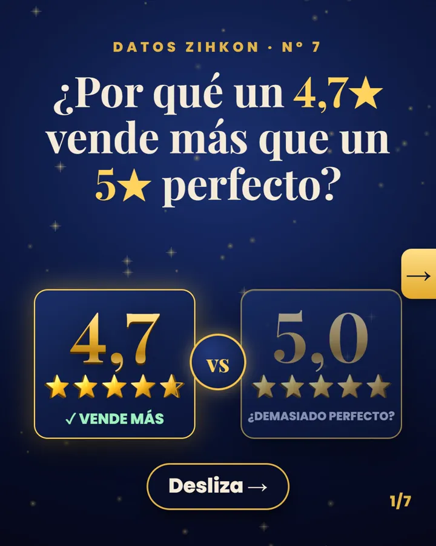
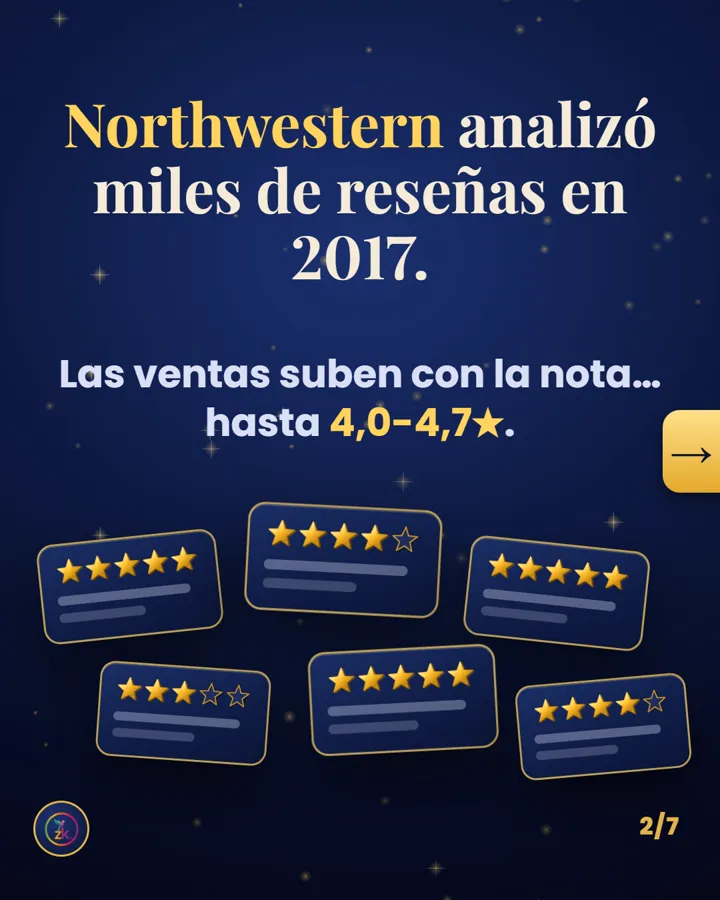
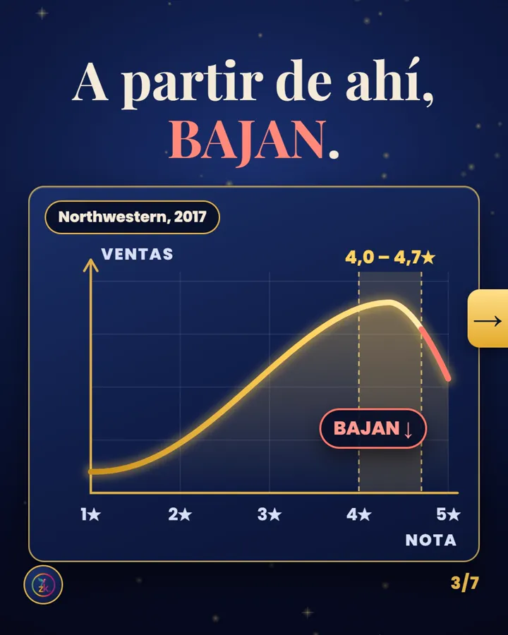
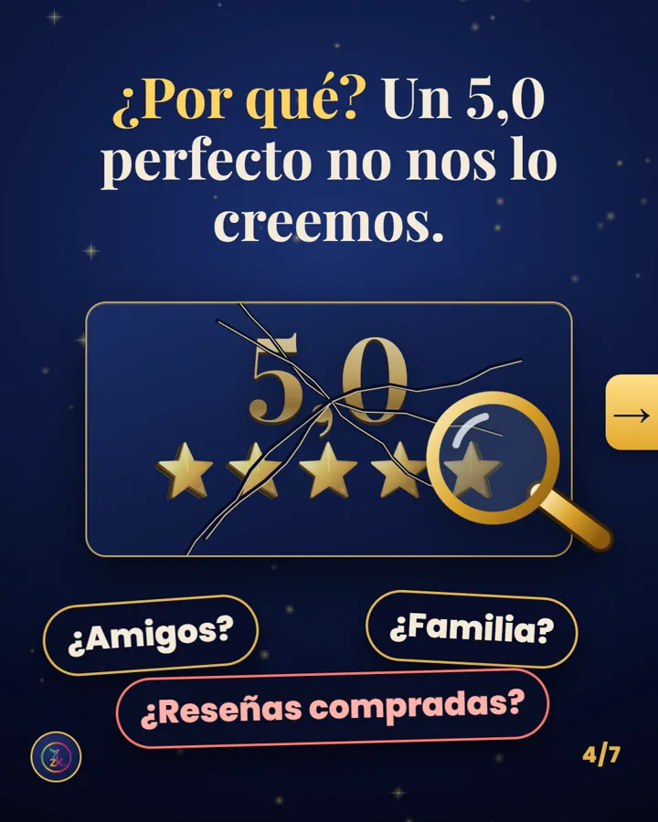
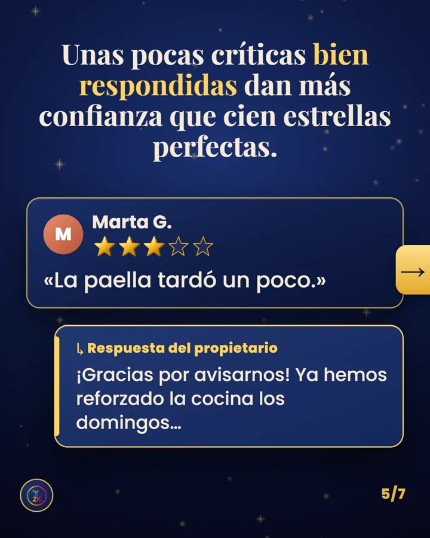
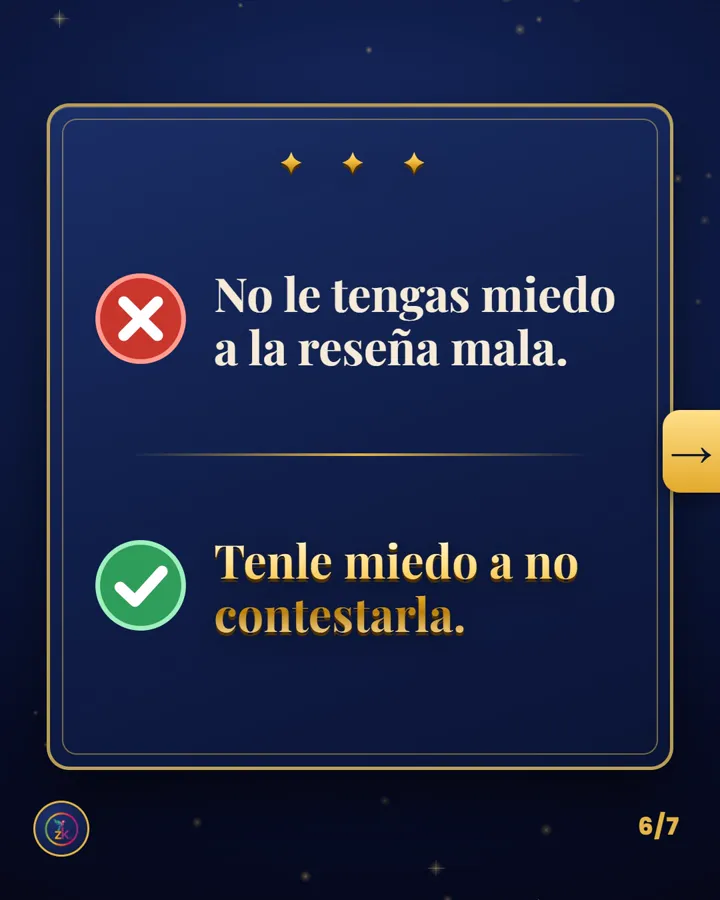
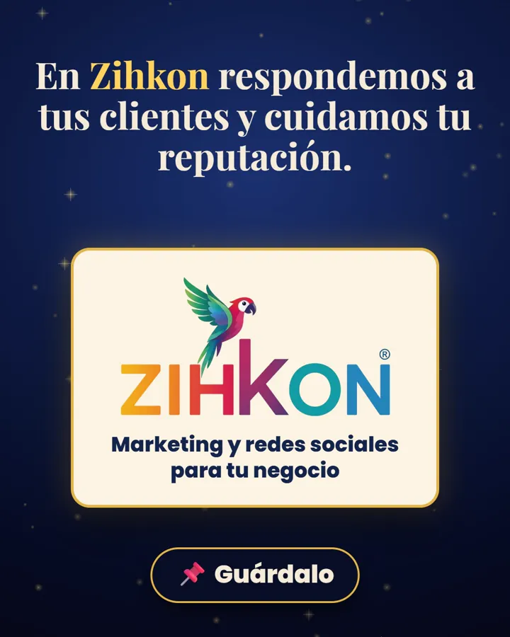

01 · Tus redes
Gestión de redes sociales
Plan mensual de contenido, diseño de publicaciones y reels, textos con llamada a la acción y hashtags locales, y publicación en Instagram, Facebook y TikTok.
Ver gestión de redes socialesMarketing local para bares, restaurantes y negocios de toda España
Creamos el contenido, lo publicamos y cuidamos tu reputación en Google. Tú dedica tu tiempo a tu negocio.
Mientras atiendes tu negocio
Esto pasa en el móvil de tus clientes cada día, aunque tú no lo veas.
Tu negocio está ahí, pero en Google Maps la gente acaba llamando a otro.
Antes de elegir, tus clientes comparan opiniones, fotos y respuestas.
Sabes que deberías publicar, pero el día a día siempre se adelanta.
Hay visitas, pero no se convierten en reservas, citas o ventas.
Has probado acciones sueltas sin una imagen clara de lo que funciona.
Las recomendaciones ayudan, pero no puedes controlar cuándo llegan.
01 · Tus redes
Plan mensual de contenido, diseño de publicaciones y reels, textos con llamada a la acción y hashtags locales, y publicación en Instagram, Facebook y TikTok.
Ver gestión de redes sociales02 · Tu ficha de Google
Categorías, servicios, horarios, fotos y publicaciones periódicas en la ficha para aparecer en las búsquedas de tu zona.
Ver Perfil de Empresa en Google03 · Tus reseñas
Respuestas con el tono de tu negocio y aviso por WhatsApp cuando alguna necesita tu opinión.
Ver respuesta de reseñas04 · Tú solo dices SÍ
Nada se publica sin tu permiso.
Mira más en nuestro Instagram (se abre en una pestaña nueva)
Así gestionamos tus redes
Cada mes preparamos tu calendario: qué se publica, cuándo y en qué red. Te lo enviamos por WhatsApp, lo apruebas y nosotros creamos y publicamos cada pieza.
Toca el reel o el carrusel para verlos: son piezas reales hechas por Zihkon.







Datos Zihkon · Nº 7
Un estudio del Spiegel Research Center de la Universidad Northwestern (2017) sobre miles de reseñas: las ventas suben con la nota hasta 4,0-4,7★ y luego bajan, porque un 5,0 perfecto no nos lo creemos. No le tengas miedo a la reseña mala; tenle miedo a no contestarla.
Quiero mi plan de contenido (abre WhatsApp en una pestaña nueva)
Si prefieres gestionarlo tú mismo, tenemos herramientas que funcionan desde tu WhatsApp. Se pueden contratar solas o sumarse a cualquier plan.
| Complemento | Alta | Cuota |
|---|---|---|
| Respuesta automática de reseñas | Sin alta | 39 €/mes |
| Publica tú en tus redes desde WhatsApp | 49 € | 49 €/mes |
| Web gestionada por WhatsApp | 290 € | 39 €/mes |
| Automatizaciones a medida | Presupuesto | |
Revisamos cómo te ve un posible cliente en Google y en redes, y te decimos qué mejorar primero. Sin coste ni compromiso.
Solo necesitamos dos datos:
Mensaje de ejemplo: Hola, quiero mi auditoría gratuita. Nombre del negocio: Bar La Plaza Dirección: Calle Real 12, Estepona
Pedir auditoría gratis (abre WhatsApp en una pestaña nueva)Te enviamos el informe por WhatsApp. Usamos tus datos solo para responder a tu solicitud (política de privacidad). No prometemos resultados sin conocer antes tu caso.
Quién está detrás
Fundador de Zihkon
Soy de la Costa del Sol y trabajo con negocios de toda España. Ayudo a negocios locales a tener unas redes y una ficha de Google que trabajen por ellos. Te atiendo yo, por WhatsApp.
Ver Zihkon en Google (se abre en una pestaña nueva)
Escríbeme por WhatsApp (se abre en una pestaña nueva)★★★★★
«Excelente trabajo y trato superprofesional. Gracias a sus estrategias he mejorado muchísimo la visibilidad de mi negocio en Google, posicionándome mucho mejor en las búsquedas locales. Ahora me encuentran más clientes potenciales todos los días. ¡Totalmente recomendados si quieres hacer crecer tu presencia online»
Si tu pregunta no está aquí, escríbenos por WhatsApp.
Zihkon es un servicio de marketing local para negocios de toda España, con base en Estepona (Málaga). Creamos y publicamos el contenido de tus redes sociales, optimizamos tu Perfil de Empresa en Google y respondemos tus reseñas. Hablas con nosotros y apruebas cada publicación por WhatsApp. Lo fundó Alberto Peña y cuesta desde 99 € al mes, sin permanencia.
Desde 99 € al mes, sin IVA y sin permanencia. Tienes los tres planes en cada servicio, por ejemplo en gestión de redes sociales. La auditoría inicial es gratis y sin compromiso.
Sí. Te creamos y publicamos 3 publicaciones en tu Facebook en 7 días, sin pagar nada y sin compromiso. Pídelo por WhatsApp con el nombre de tu negocio.
No. Si sabes enviar un WhatsApp, sabes trabajar con Zihkon.
Sin permanencia. Avisas y no se renueva el siguiente mes.
Sí, con negocios de toda España. Todo se gestiona por WhatsApp, así que no importa en qué ciudad esté tu negocio.
No necesariamente. Revisamos primero tu Perfil de Empresa en Google y tu presencia actual para recomendar solo lo que aporte valor.
Para algunas mejoras sí se necesita acceso como gestor. Te explicamos el proceso y nunca necesitamos tu contraseña personal.
Según la encuesta de consumidores de BrightLocal de 2026 (1.002 adultos de EE. UU.), el 80 % de los consumidores es más propenso a elegir un negocio que responde a todas sus reseñas, y al 50 % le echan atrás las respuestas genéricas o de plantilla. Google también lo recomienda: «Responder a las reseñas de forma útil y positiva es una forma de demostrar que te preocupas por tus clientes».
No necesariamente. Según un informe del Spiegel Research Center de la Universidad Northwestern (2017), la probabilidad de compra sube con la nota media hasta alcanzar su máximo entre 4,0 y 4,7 estrellas, y baja cuando la nota se acerca a 5,0: una nota perfecta resulta menos creíble. Unas pocas críticas bien respondidas dan confianza; lo que perjudica es dejarlas sin contestar.
Depende de la competencia local, el punto de partida y las acciones acordadas. Algunas mejoras de perfil son inmediatas; el posicionamiento orgánico necesita constancia. No prometemos posiciones ni plazos que no podemos controlar.
Tú nos las mandas por WhatsApp. En el plan Presencia Total vamos a tu negocio una vez al mes a hacer las fotos y los vídeos.
Sí. Te enseñamos cada publicación y no sale sin tu SÍ.
Siguen siendo tuyas. Nunca cambiamos la propiedad de tus redes ni de tu ficha de Google.
En los planes lo hacemos nosotros; con las automatizaciones lo haces tú desde tu WhatsApp.
Te decimos qué está frenando tu negocio en Google y en redes, y cómo lo arreglamos.